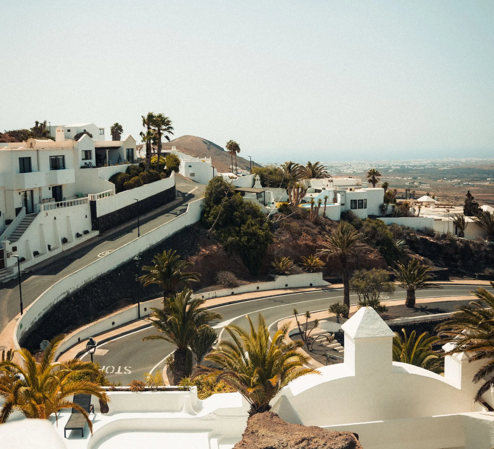

Otkrijte svijet sa MaTravel
Istražite nove destinacije i stvorite nezaboravna sjećanja.
Saznajte višeZašto baš mi?
Putujte sigurno, jednostavno i bez stresa uz naš tim stručnjaka.
Sigurno putovanje
Vaša sigurnost i zadovoljstvo uvijek su nam na prvom mjestu.
Najbolje cijene
Pronađite vrhunske destinacije po povoljnim cijenama.
Brza rezervacija
Rezervirajte svoje putovanje brzo i jednostavno online.
Šta je MaTravel?
MaTravel je web stranica koja omogućava ljudima da pronađu zanimljive i popularne destinacije za putovanje. Destinacije koje obuhvaća MaTrevel nisu ograničene samo na Europu već na cijeli svijet.
Cilj MaTravel je olakšati ljudima organizirati i realizirati odmor u što kraćem vremenu i sa što manjom cijenom.
Ova stranica je izrađena za završni rad i svrha je različitim verzijama ove stranice dokazati kako radi optimizacija web stranica, te na koje se sve načine ta optimizacije može napraviti.
